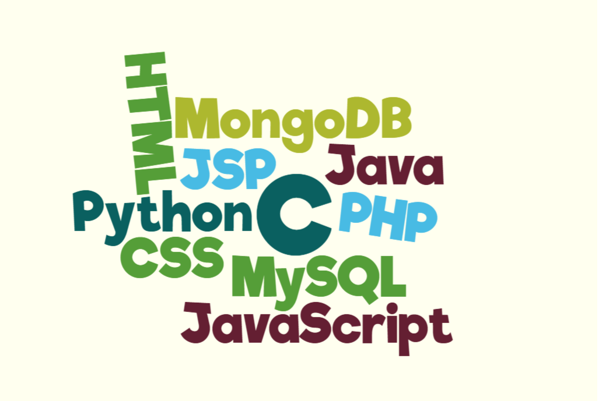
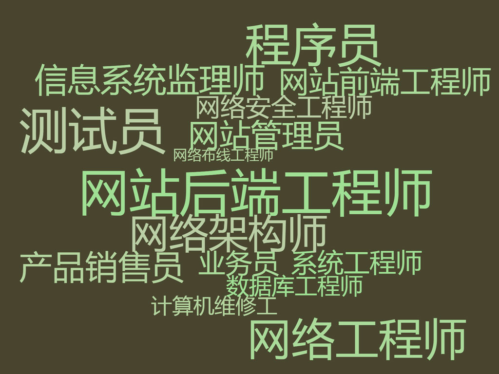

请各组派成员上网寻找名人（可以是自己崇敬的）的事迹，并将他/她为了梦想而奋斗的故事分享给各位同学。（限时一分半钟，请注意演讲时间）
听完许多名人的故事，我们回头想想：

1. 你有梦想吗？它是？
2. 你是否有想象过如何用学习的技能实现你的梦想？
3. 有人认为，来到技校就是混日子拿个文凭，对此你怎么看？
4. 你是否有未来的人生目标/想做成的事情？
5. 还有短短的几周，我们班就将面临分流，你会如何规划自己未来的校园生活？
6. 你最喜欢的计算机语言是？
7. 你最向往的职业是？
